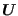
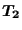
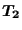
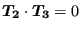
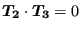
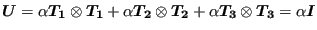
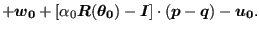

Next: Arbitrary knot Up: Mathematical description of a Previous: Beam knot Contents
The expansion of a shell node leads to a set of nodes lying on a straight line. Therefore, the stretch tensor
 is reduced to the stretch along this line. Let
 be a unit vector parallel to the expansion and
 and
be a unit vector parallel to the expansion and
 and
 unit vectors such that
 and
unit vectors such that
 and
 . Then
can be written as:
. Then
can be written as:
leading to one stretch parameter  . Since the stretch along
and
. Since the stretch along
and
 is immaterial, Equation (180) can also be replaced by
is immaterial, Equation (180) can also be replaced by
|  | (181) |
representing an isotropic expansion. Equation (179) can now be replaced by
 |
||
|  | (182) |
Consequently, a knot resulting from a shell expansion is characterized by 3 translational degrees of freedom, 3 rotational degrees of freedom and 1 stretch degree of freedom.